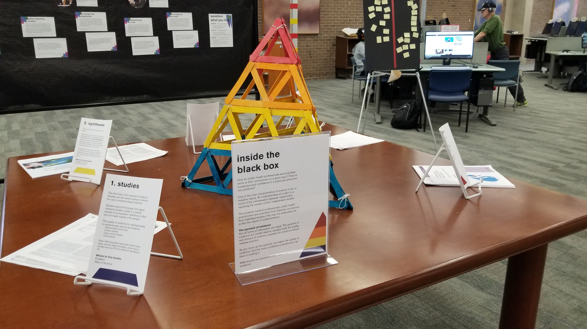

In the summer of 2018, the Windsor-Essex County Health Unit published a report on the state of oral health in the region. Following a marked increase in dental disease, the Health Unit called upon the city council to re-introduce fluoride to the drinking water, after it had been removed in 2011. A public debate on the safety and efficacy of water fluoridation opened on local news and on social media. In Winter 2019, I developed an in-person and online exhibit to respond to the discourse.
Windsor’s debate on water fluoridation is not a new one. Although the City of Windsor had been an early adopter of water fluoridation as a public health measure, the city council bowed to vocal public pressure in 2011 and removed fluoride from the drinking supply. In 2011, and again in 2018, a fierce public debate opened on social media and in the local news, and it was impossible to go far without witnessing the rhetoric.
Unreliable information on the topic was commonplace during this time. Although water fluoridation has been deemed effective and safe by scientists and health officials, most of the social media posts contained information that misrepresented the truth, were riddled with conspiracy theories, selectively reported scientific evidence, or otherwise was false.
The conditions were perfect for some library programming on information literacy, critical thinking and health literacy. During this time, and at present, there are calls within library and information science for academic libraries to do more to develop civic engagement within students. In our current ‘post-truth’ era, academic libraries have also been called upon to do more than simply teach students to critically evaluate scholarly information and to instead reenvision how it applies the Framework for Information Literacy in Higher Education.
There were three main learning objectives with the exhibit:
A physical exhibit was erected in the Leddy Library’s main lobby. A large bulletin board contained a timeline of the history of water fluoridation in the City of Windsor. It also explained which government bodies were involved in making these decisions, how they were involved, and upcoming dates for future consideration by governments. In the centre of the exhibit, the hierarchy of evidence used in evidence-based medicine was constructed using popsicle sticks, surrounded by printouts of various medical research on water fluoridation programs. An alternating question about the controversy was posted on a board with post-it notes, inviting students to participate in the discourse with their opinion. Finally, a book cart was filled with relevant reading material on pseudoscience and critical thinking.
An accompanying online campaign was also unveiled at the same time. A webpage summarizing the key points of the exhibit was published, and a series of eye-catching images with key messaging was published on the library’s Instagram, Twitter and Facebook channels.
Objectively, the exhibit and social media campaigns were well received. The exhibit webpage received over 180 visits during the month of March, and the social media campaign received over XXXXX impressions during the same period. People actively engaged with the post-it note questions that alternated during the exhibit.
This exhibit responds to the contemporary environments that libraries are facing in the ‘post-truth’ era, such as having to re-tool the way we deliver information literacy and how we engage students in the democratic process. Stefanie Bluemle’s 2018 essay on information literacy in today’s world criticizes source-evaluation of authority in information literacy instruction, and instead calls on librarians to “explore methods of teaching about the relationship between evidence and its interpretation” and “give more attention to the role emotion plays in reasoning and decisionmaking”. This exhibit does just that by focusing on the affective techniques used in anti-fluoridation literature to sway the interpretation of the information. By providing a view on the role of government in this debate, and by equipping students with the proper understanding of the scientific literature, students were prepared to participate in this process.
The way in which public health officials and clinicians make decisions—in this case, water fluoridation—can be mysterious to the layperson. Of course, these decisions are informed by the best available scientific evidence, but this process is often shielded from the public. Within the context of the information literacy frame Information Creation as a Process, this exhibit also sought to unveil how evidence-informed decision making works in public health. The popsicle-stick pyramid was used to represent the hierarchy of evidence, which grades scientific evidence for use in clinical decision making. Explanations of the hierarchy and examples of summaries, synopses, syntheses and original studies on the topic of water fluoridation were included to connect students to the same information that is used by public health officials in this form of work.
The interface of information literacy, health and fake news is an area of personal research interest. Currently, I am in the process of writing this work up so that I can share it with my colleagues in the profession. I hope to continue investigating the role that academic libraries can take to address misinformation around scientific concepts, such as climate change.
In this particular case, I made use of social media to share teachings of information literacy and evidence-informed decision making with people online. My intention is to continue to develop information literacy content in an online environment, such as in this case, in order to extend the reach of this work outside the classroom.